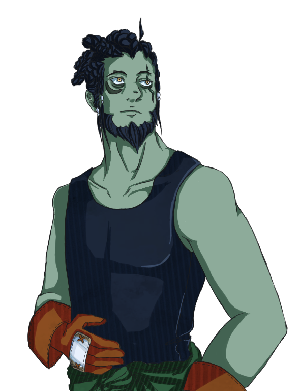

<!DOCTYPE html>
<html lang="en">
	<head>
		<title>TTN - Scion's Social Media</title>
		<meta charset="UTF-8">
		<link rel="stylesheet" type="text/css" href="css/socials_sp.css">
	</head>
	<body>
		<header>
			
			<map name="navigation">
				<area shape="rect" coords="41,0, 111,25" alt="About Scion Plays" href="about_sp.html">
				<area shape="rect" coords="131,0, 284,25" alt="Scion's Partnerships" href="partnerships_sp.html">
				<area shape="rect" coords="304,0, 473,25" alt="Scion's Social Media" href="socials_sp.html">
			</map>
			<a href="index.html"></a>
			<br>
			<br>
			
		</header>
		<main>
			<article>
				<a href="https://www.youtube.com/@Scion_Plays"></a>
				<br>
				<br>
				<a href="https://www.twitch.tv/scion_plays/"></a>
				<br>
				<br>
				<a href="https://twitter.com/Scion_Plays"></a>
			</article>
			<aside>
				
			</aside>
		</main>
	</body>
	<footer>
		<!-- All art assets present in this website were made by Lucius Petri, AKA Undead Innkeeper.-->
		<!-- The uCorp logo presumably belongs to CIW, since uCorp is a fake company used in their uCertify text for example purposes. -->
		<!-- This site was made by Charles McChesney. Last updated on 12/13/2023, assuming I remembered to update this comment. -->
	</footer>
</html>